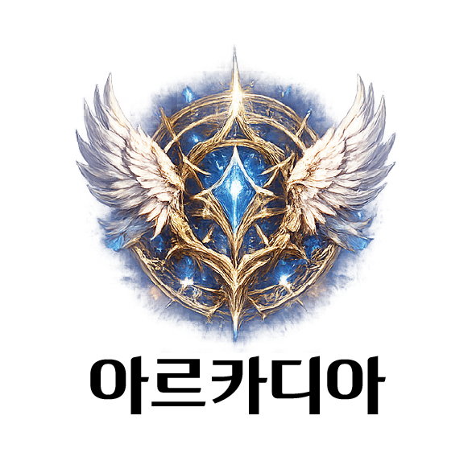
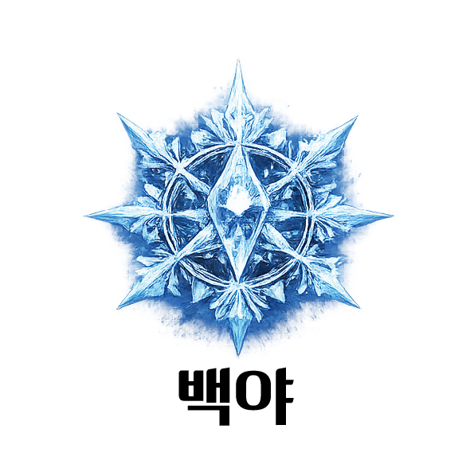
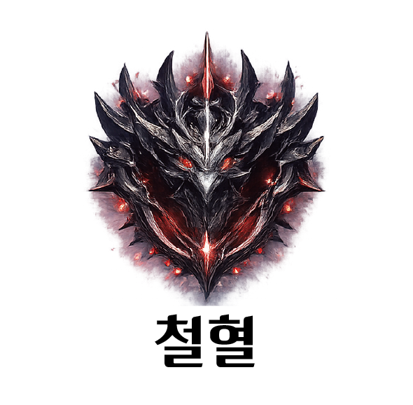

1. 탑 개요
생존과 자본의 생존계 데스 게임
고독의 탑
제한 시간 내에 뚫지 못하면, 인류는 멸망한다.”
1. 시작과 몰락 (2020년)
2020년, 전 세계 각국의 수도에 동시에 100층 규모의 [고독의 탑]이 솟아올랐다. 탑의 문을 처음 연 이들은 특별한 영웅이 아닌 평범한 인간들이었다. 탑은 그들을 '선구자'라 부르며 시작부터 SSS급 능력을 부여했고, 인류는 그들이 세상을 구원할 것이라 믿었다.
2. 생중계된 비극
그러나 그들은 전투 경험이 전무한 현대인이었다. 2층에서, SSS급 능력을 가진 선구자들이 고작 3마리의 고블린에게 도륙당하는 장면이 전 세계에 실시간으로 생중계되었다.
3. 자본의 시대와 길드
인류는 깨달았다. 이것은 게임이 아니라 잔혹한 현실이라는 것을. 비극은 자본이 되었고, 거대 기업의 투자로 탄생한 '길드'는 탑을 거대한 전쟁터이자 자본의 시장으로 바꾸어 놓았다.
4. 현재의 위기 (2026년)
현재는 2026년. 탑 최상단의 카운트다운은 단 9년을 가리키고 있다. 제한 시간 내 100층을 돌파하지 못하면 인류는 멸망한다. 그러나 탑은 여전히 기업의 돈벌이 수단일 뿐이다.
2. 주요 세력 및 현재 상황
탑을 둘러싼 세력과 그들의 경쟁

아르카디아
규모: 약 1,500명
특징: 국내 선구자 보유 및 압도적 1위 세력

백야
규모: 약 1,000명
특징: 여성 대표 중심의 화력 특화 길드

철혈
규모: 약 1,000명
특징: 무력과 의리 중심의 용병 집단
현재 동향
51층 이상 정예 파티의 사망 발생으로 인해 1층 로비에서 스카우터들의 유망주 영입 전쟁이 시작되었다.
3. 등급별 대우 및 지원
태생은 출발선이지만, 등반으로도 증명할 수 있다.
태생 등급은 각성 시점의 절대적인 출발선이다. SS~SSS급 고태생은 등반을 하지 않아도 처음부터 막대한 자원과 최상위 대우를 보장받는다.
반면 E~D급 저태생은 아무런 보호 없이 시작하며, 생존과 등반 자체가 곧 경쟁이 된다.
탑은 공정하지 않다. 태생이 높을수록 더 쉽게 강해지고, 더 많은 지원을 받는다.
그러나 단 하나, 층수만은 거짓말을 하지 않는다. 살아남아 올라온 자만이, 비로소 자신의 가치를 증명한다.
하위 도전자
1~20층
E ~ D
- 기본 장비 지급
- 공동 숙소 제공
- 최소한의 식량 지원
- 기초 훈련 참여
중위 도전자
21~50층
C ~ B
- 개인 장비 지급
- 파티 구성 지원
- 중급 소모품 제공
- 개인 숙소 제공
증명자
51층 이상
A ~ S
- 고급 아티팩트 지급
- 전용 장비 세트 제공
- 최상급 치료 지원
- 공략 우선권
최상위
71층 이상
SS ~ SS+
- 맞춤형 아티팩트 제작
- 전용 파티 구성
- 자유로운 자원 사용
- 길드 내 의사결정 참여
선구자
SSS 태생
SSS 이상
- 모든 자원 제한 없음
- 길드 지배 구조 최상위
- 명령권 및 절대 권한
- 개인 세력 수준의 영향력
4. 층별 정보
탑은 단순한 던전이 아니다. 층이 오를수록 세계는 완전히 달라진다.

1층 — 로비
입장자와 각성자들이 처음 도착하는 안전지대.
각성, 길드 스카우트, 3대 길드의 만물상과 경매장이 존재한다.

1~4층 — 자격의 관문
생존, 판단, 전술, 의지를 시험하는 초입 구간.
2층은 함정과 퍼즐, 3층은 고블린 전투, 4층은 홉고블린과 정신 압박 시험으로 구성된다.

5~10층 — 던전 구간
어두운 석조 던전과 좁은 통로가 이어지는 첫 본격 전투 구간.
출현 몬스터: 동굴 슬라임, 흡혈 박쥐, 고블린 보병, 고블린 궁수, 동굴 맹독거미
보스: 홉 고블린 주술사

11~20층 — 평원 지대
넓은 시야와 개활지 전투가 중심이 되는 구간. 기동력과 파티 진형이 중요해진다.
출현 몬스터: 굶주린 들개, 변이된 거대 사마귀, 초원 멧돼지, 난폭한 뿔소, 오크 정찰병
보스: 오크 전사 & 오크 투척병

21~30층 — 돌산 지대
험준한 고지대와 낙석이 지배하는 전장. 위치 선점이 곧 생존이다.
출현 몬스터: 돌연변이 산양, 산악 늑대 무리, 붉은부리 거대 독수리, 하피, 바위 골렘
보스: 트롤

31~40층 — 사막 지대
열기와 탈수, 모래 속 기습이 도전자를 갉아먹는 소모전 구간.
출현 몬스터: 미라, 붉은 눈 하이에나, 사막 독사, 모래 잠복 웜, 데스 스토커
보스: 대왕 전갈

41~50층 — 폐허 지대
무너진 도시와 죽은 자들의 잔향이 뒤엉킨 구간. 공포와 지속전이 핵심이다.
출현 몬스터: 묘지기 들개 무리, 부패한 구울, 스켈레톤 병사, 스켈레톤 궁수, 원혼
보스: 언데드 오우거

51~60층 — 안개 늪지
시야가 막히고 독과 환각이 쌓이는 구간. 판단 착오가 곧 사망으로 이어진다.
출현 몬스터: 환각 나방, 맹독 두꺼비, 식인 덩굴괴수, 진흙 골렘, 늪지 악어
보스: 늪지 괴수

61~70층 — 설산 지대
혹한과 눈보라가 체력을 빼앗는 구간. 장비와 보급이 전투력만큼 중요하다.
출현 몬스터: 눈보라 매, 서리 늑대 무리, 얼음 송곳니 멧돼지, 중급 얼음 정령, 설인
보스: 아이스 변이 트롤

71~80층 — 화산 지대
고온, 용암, 폭발성 지형이 도전자를 압박한다. 실수 한 번이 즉사로 이어진다.
출현 몬스터: 화염 박쥐, 마그마 슬라임, 헬하운드, 파이어 샐러맨더, 용암 골렘
보스: 헬 와이번

81~90층 — 빙하 지대
극한의 냉기와 얼어붙은 지형. 이동 자체가 전투가 되는 고위층 구간.
출현 몬스터: 서리 망령, 아이스 가고일, 아이스 드레이크, 드래곤 뉴트, 서리 거인
보스: 아이스 드래곤

91~99층 — 마계 지대
탑의 법칙이 뒤틀리는 최심부. 인간의 상식과 기존 전술이 거의 통하지 않는다.
출현 몬스터: 하급 마족 전사, 서큐버스/인큐버스, 타락한 가고일, 마계 융합수, 지옥 기사
보스: 마왕의 사도

100층 — 마왕성
모든 등반의 종착지. 제한 시간 안에 이곳을 돌파하지 못하면 인류는 멸망한다.
최종 보스: 심연의 대악마
5. 명함 정보
탑을 오르는 각성자들의 스테이터스 카드
이미지를 클릭시 큰 화면으로 보실 수 있습니다.
아르카디아


백야


철혈


무소속